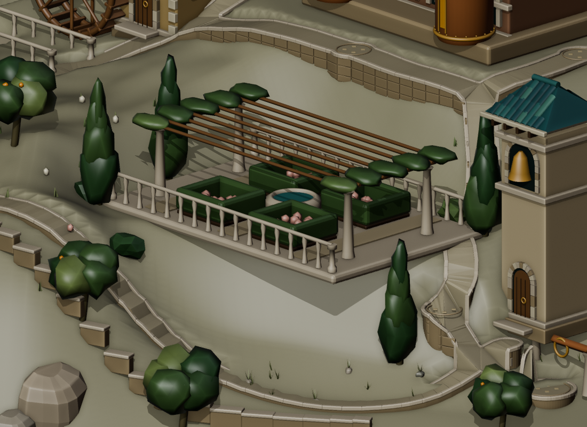
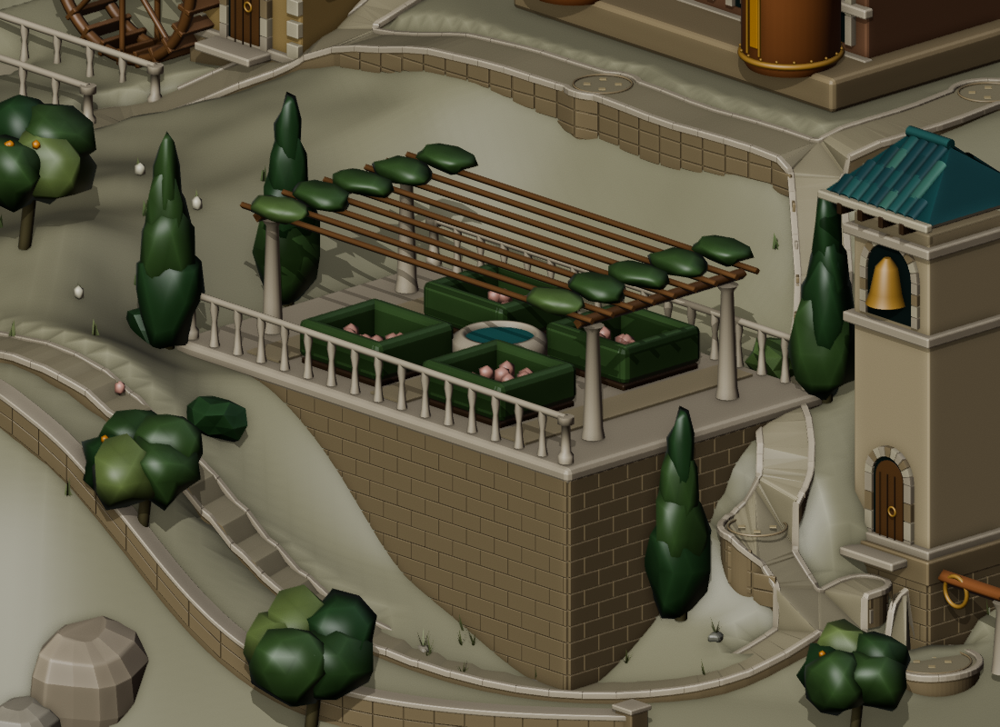
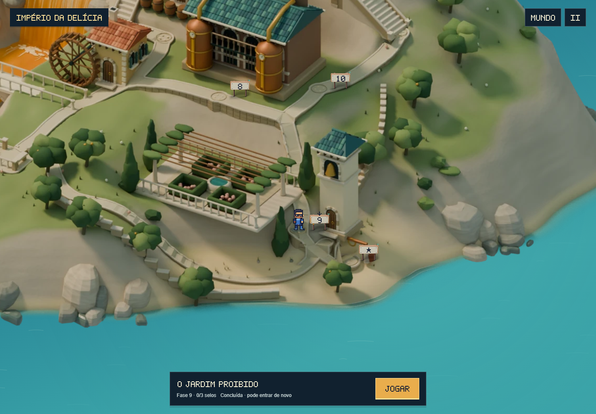
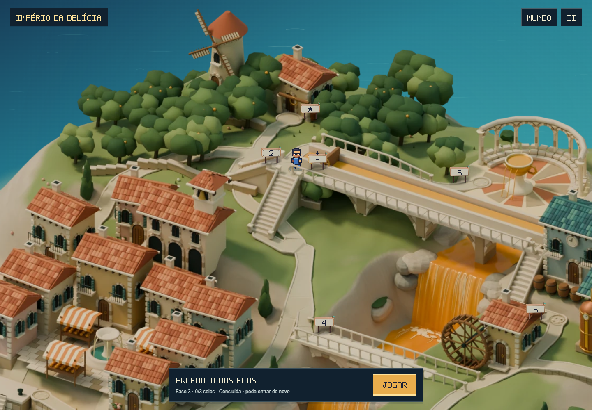
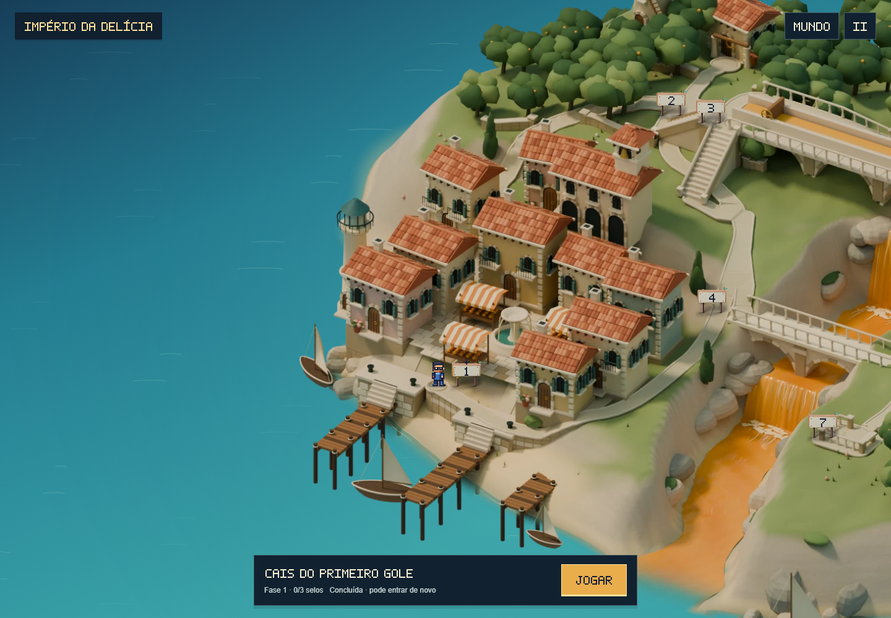
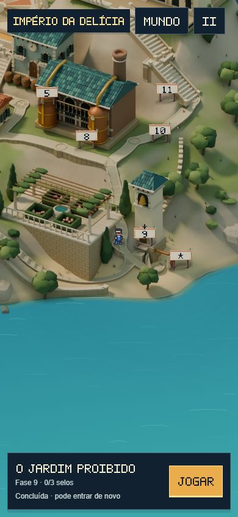

Terraços apoiados no terreno.
Muros que acompanham os caminhos.
A inspeção lateral revelou trechos suspensos no jardim, no campanário e em três casas. As novas bases de alvenaria chegam ao terreno. Na costa e no pomar, os muros agora seguem as curvas e a inclinação do chão, com acessos livres.
O jardim, visto de lado


Antes · v9Agora · v10Vistas técnicas do Blender, com a mesma câmera e iluminação de inspeção. A borda mais exposta tinha cerca de 3,14 m de vazio por baixo. A base fechada e as fiadas de pedra resolvem o apoio sem mudar o piso do jardim.
No mapa do jogo

 Antes · v9Agora · v10
Antes · v9Agora · v10A vegetação da pérgola foi recolhida sobre as vigas para reduzir a obstrução da chegada. Imagem e profundidade são exportadas juntas do mesmo modelo.
Muros do pomar

Antes · v9Agora · v10As peças soltas deram lugar a um corpo contínuo de alvenaria, capeamento ajustado e pilares nas extremidades. Os recortes consideram também os cantos dos remates, deixando livre o calçamento nas entradas em diagonal.
Apoios das casas junto ao cais

Caminhada no jogo
Chegada ao jardim no celular
